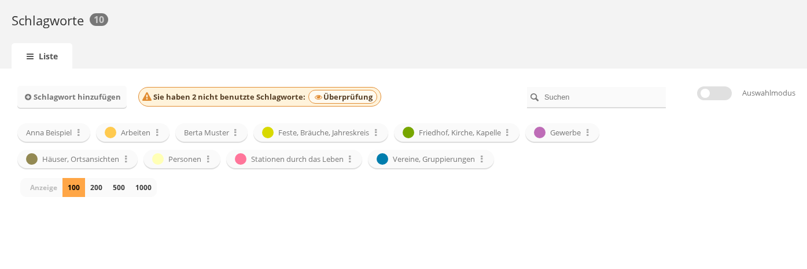
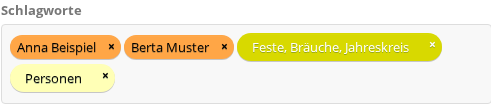
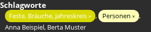
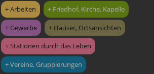

Schlagworte beschreiben, was auf einem Foto zu sehen ist, quer zu den Alben. Sie werden in
der Verwaltung unter Schlagworte
(admin.php?page=tags) angelegt und dort oder an einem einzelnen Foto zugeordnet.
Ein Teil der Schlagworte trägt eine Farbe. Farbige Schlagworte können angemeldete Benutzer
auch direkt auf der Fotoseite setzen, ohne Zugang zur Verwaltung.
Schlagworte anlegen, umbenennen und löschen

Die Schlagwortverwaltung. Der farbige Punkt vor einem Namen zeigt die Farbe des Schlagworts.
Anlegen: auf Schlagwort hinzufügen klicken, den Namen
eingeben und bestätigen.
Suchen: das Feld Suchen rechts filtert die Liste.
Die drei Punkte hinter einem Schlagwort öffnen sein Menü mit fünf Einträgen:
Galerie-Ansicht: zeigt alle Fotos mit diesem Schlagwort so, wie Besucher
sie sehen. Fehlt, wenn kein Foto das Schlagwort trägt.
Fotos verwalten: öffnet die Stapelverarbeitung, gefiltert auf dieses
Schlagwort. Fehlt ebenfalls, solange kein Foto es trägt.
bearbeiten: benennt das Schlagwort um. Der neue Name kommt in das Feld
Tag-Name, bestätigt wird mit Ja, umbenennen. Der Name
ändert sich überall, an jedem Foto.
Duplikat: legt eine Kopie des Schlagworts an, deren Name die Ergänzung
(kopieren) trägt. Es wird sofort und ohne Rückfrage angelegt.
Löschen: entfernt das Schlagwort. Die Rückfrage
Schlagwort "..." löschen? wird mit Ja, löschen
bestätigt oder mit Nein, ich habe meine Meinung geändert abgebrochen. Die
Fotos bleiben erhalten, sie verlieren nur dieses Schlagwort.
Schlagworte zusammenführen
Zwei Namen für dieselbe Sache lassen sich zu einem zusammenführen. Das geht nur im
Auswahlmodus.
Oben rechts Auswahlmodus einschalten.
Mindestens zwei Schlagworte anklicken. Unter Ihre Auswahl erscheinen die
gewählten Namen. Solange weniger als zwei ausgewählt sind, bleibt
Zusammenführen grau.
Auf Zusammenführen klicken und im Feld darunter das Schlagwort wählen, das
übrig bleiben soll. Der Hinweis Die anderen Schlagworte werden entfernt steht
darüber.
Mit Confirm merge bestätigen. Alle Fotos der anderen Schlagworte tragen
danach das gewählte, die anderen Schlagworte sind gelöscht.
Die beiden Schaltflächen dieses Dialogs sind nicht übersetzt und heißen auf einer deutschen
Oberfläche Confirm merge und Cancel.
Nicht benutzte Schlagworte
Trägt kein Foto ein Schlagwort mehr, meldet die Seite oben
Sie haben ... nicht benutzte Schlagworte mit dem Link
Überprüfung. Die Meldung erscheint erst, wenn das Schlagwort seit mehr als
einem Tag unbenutzt und unverändert ist. Ein gerade angelegtes Schlagwort taucht dort also
noch nicht auf. Der Link löscht nichts, sondern zeigt zuerst die Namen. Erst
Lösche diese entfernt sie; Behalte diese blendet die
Meldung nur aus.
Schlagworte einem Foto zuordnen
In den Eigenschaften eines Fotos (admin.php?page=photo-<nummer>-properties)
steht das Feld Schlagworte. Eintippen schlägt vorhandene Schlagworte vor,
das x an einem Eintrag entfernt ihn. Gesichert wird mit
Einstellungen sichern.

Die Schlagworte eines Fotos. Farbige Schlagworte tragen ihre Farbe, die übrigen die Standardfarbe des Feldes.
Beim Sichern ersetzt die Liste im Feld die bisherigen Schlagworte des Fotos vollständig.
Was hier fehlt, ist danach nicht mehr zugeordnet. Wer nur eines ergänzen will, lässt die
übrigen stehen.
Farbige Schlagworte
Ein Schlagwort kann eine Farbe bekommen. Farbige Schlagworte werden überall als farbige
Plakette dargestellt und sind dadurch auf einen Blick von den übrigen zu unterscheiden. In
dieser Galerie sind acht Schlagworte farbig:
Arbeiten
Feste, Bräuche, Jahreskreis
Friedhof, Kirche, Kapelle
Gewerbe
Häuser, Ortsansichten
Personen
Stationen durch das Leben
Vereine, Gruppierungen
Eine Farbe wird in der Schlagwortverwaltung vergeben:
Auswahlmodus einschalten und mindestens ein Schlagwort anklicken. Erst
dann erscheint die Schaltfläche Farbe.
Auf Farbe klicken und unter Schlagwort-Farben festlegen
eine der vorhandenen Farben anklicken. Die erste, schwarze Fläche heißt
Farbe entfernen und nimmt die Farbe wieder weg.
Fehlt die passende Farbe, unter Eine neue Farbe hinzufügen Name und Farbe
eingeben und auf Erstellen klicken.
Mit Schlagwort-Farben festlegen anwenden, dann Schließen.
Farbige Schlagworte auf der Fotoseite setzen
Das ist der Weg für alle angemeldeten Benutzer, auch ohne Verwaltungsrechte. Auf der Seite
eines Fotos steht rechts der Abschnitt Schlagworte mit den bereits
vergebenen. Die noch nicht vergebenen farbigen Schlagworte stehen am Fuß der rechten Spalte,
unterhalb aller Angaben und damit auch unterhalb von Herkunft, jeweils mit
einem + davor.

Vergebene Schlagworte. Farbige tragen ein x zum Entfernen.

Die noch nicht vergebenen farbigen Schlagworte, jeweils mit einem Pluszeichen.
Hinzufügen: auf eine Plakette mit + klicken. Der
Kurzhinweis lautet Schlagwort hinzufügen. Das Schlagwort wandert sofort zu den
vergebenen.
Entfernen: auf das x einer vergebenen farbigen Plakette
klicken. Der Kurzhinweis lautet Schlagwort entfernen.
Beides wirkt sofort, ohne Speichern. Vergebene Schlagworte stehen in einer Zeile, durch
Kommas getrennt; farbige als Plakette, farblose als schlichter Text. Schlagworte ohne Farbe
lassen sich hier nicht ändern und werden in der Verwaltung gepflegt. Nicht angemeldete
Besucher sehen weder das + noch das x.